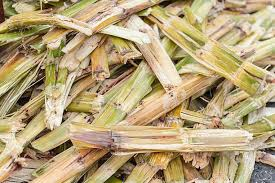

Agricultural Waste into Useful Products.
Crop Residues to Biofuel
Crop residues like corn stover and wheat straw are leftover plant materials after harvesting grains. They contain sugars and cellulose, which can be converted into biofuels.
Read MoreFruit and Vegetable Waste to Compost
Fruit and vegetable waste from households, markets, and processing plants consist of peels, cores, and trimmings, rich in organic matter.
Read MoreLivestock Manure to Biogas
Livestock manure, such as cow dung and pig waste, contains organic matter that can be anaerobically digested to produce biogas, a renewable energy source.
Read MorePoultry Litter to Organic Fertilizers

Poultry litter, comprising manure, bedding materials, and feathers, is a valuable source of nutrients for plants.
Read MoreRice Straw to Mushroom Cultivation
Rice straw, a by-product of rice harvesting, can be used as a substrate for growing mushrooms such as oyster mushrooms.
Read MoreCorn Cobs to Animal Bedding

Corn cobs, the central part of corn ears, can be dried and processed into bedding material for livestock and poultry.
Read MoreSugarcane Bagasse to Livestock Feed
Sugarcane bagasse, the fibrous residue left after juice extraction, can be used as feed for livestock.
Read MoreCoffee Grounds to Soil Amendment
Used coffee grounds are a common waste product generated by coffee consumption.
Read MoreGrape Pomace to Animal Feed
Grape pomace, the solid residue left after winemaking, contains skins, seeds and stems.
Read MoreWheat Chaff to Biochar
Wheat chaff, the outer husk of wheat grains, can be converted into biochar, a stable form of carbon.
Read MoreCoconut Husks to Mulch
Coconut husks are the fibrous outer shell of coconuts, often considered a waste product.
Read MoreBanana Peels to Vermicompost
Banana peels, a common kitchen waste item, can be recycled into nutrient-rich vermicompost using earthworms.
Read MoreAquaculture Waste to Fish Feed
Aquaculture operations generate waste in the form of uneaten feed, feces, and dead organisms.
Read MoreSunflower Stalks to Biomass Briquettes
Sunflower stalks, left over after harvesting sunflower seeds, can be compacted into biomass briquettes for use as fuel.
Read MoreCotton Gin Trash to Soil Erosion Control
Cotton gin trash, consisting of stems, leaves, and seed hulls, is a by-product of cotton ginning.
Read More